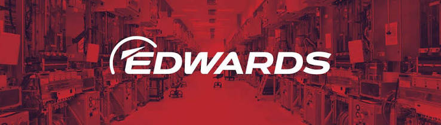

Dry vacuum pumps
Dry vacuum pump technology listed in the supplied MTSI company profile.
Vacuum pumps / ejectors / boosters
MTSI’s supplied company profile lists agency products from Edwards: dry and liquid ring vacuum pumps, steam ejector systems, vapor boosters, and mechanical boosters.

The supplied MTSI About Us profile lists these Edwards product families. Contact MTSI to select equipment against your process conditions.
Dry vacuum pump technology listed in the supplied MTSI company profile.
Liquid ring vacuum technology for application-specific selection.
Steam ejector vacuum systems.
Vapor booster equipment.
Mechanical booster equipment.
Send your operating duty, equipment details, or spare-part reference to MTSI.
EMAIL MTSI ↗